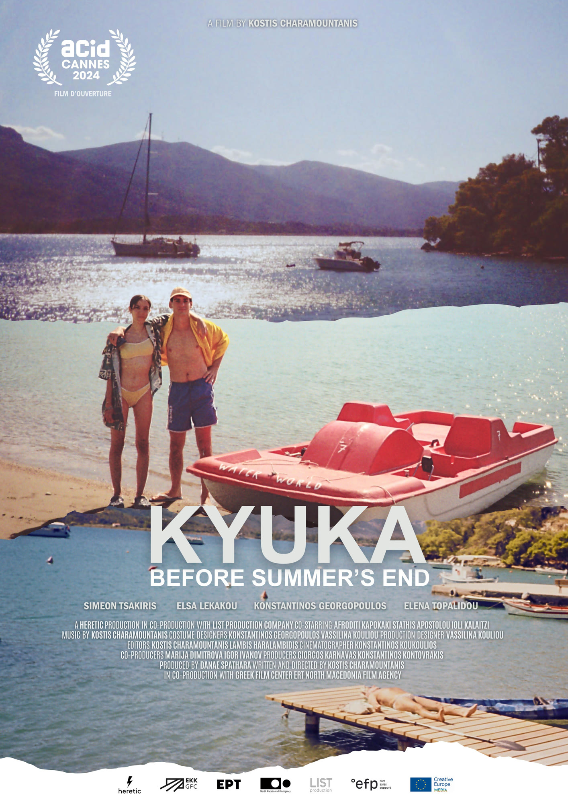

Kyuka: Before Summer’s End
Trailer / 2025 / 2 Min.
Konstantinos and Elsa sail to the island of Poros for holidays with their father, Babis. While swimming, sunbathing and making new friends the siblings meet their birth mother, Anna, unbeknownst to them as she abandoned them when they were babies. This encounter will result in a sun-kissed, bittersweet coming-of-age journey.
Trailer edited by myself.
Release date in the Netherlands: 1 May, 2025
Running time: 1h 45m
→ Trailer

Credits
Director Kostis Charamountanis
Produced by Heretic
Producers Giorgos Karnavas, Danae Spathara, Konstantinos Kontovrakis, Marija Dimitrova
Cinematography Konstantinos Koukoulios
Starring Simeon Tsakiris, Konstantinos Georgopoulos, Elsa Lekakou